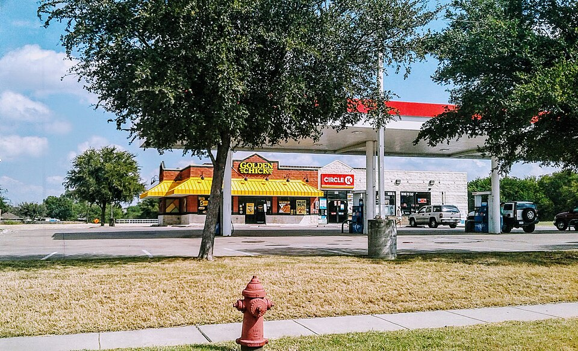

Aves · Frango
Frango dourado

Ingredientes
- 1 frango em pedaços
- 2 cubos de caldo de galinha
- 4 dentes de alho amassados
- 5 colheres (sopa) de azeite
- 5 colheres (sopa) de óleo
- 4 colheres (sopa) de queijo parmesão ralado
- Pimenta-do-reino e orégano a gosto
- 2 xícaras (chá) de água fervente
Modo de preparo
- Esfregue o frango com os cubos de caldo misturados ao alho e ao azeite.
- Despeje o óleo numa assadeira e arrume os pedaços. Salpique o queijo com pimenta e orégano.
- Asse em forno brando até começar a dourar. Despeje a água e volte ao forno até ficar bem dourado e macio.
Observação: recorte Knorr; qualquer caldo de galinha serve.